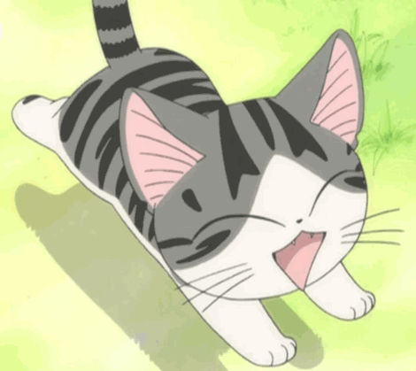
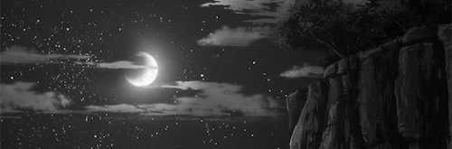

A little exploring wouldn't hurt, you'll just need to book it even faster. With that thought in mind, you head to the left and scavenge the strange fluffy creatures always roaming the garden.
A tiny footprint excites you and it leads to the black creature. It has two pointed ears, whiskers and silky fur. It comes towards you, seemingly craving for attention and you stroke its lovable fur. It vibrates it and meows as you do so. 
"You are really soft... and not at all dangerous... I wish they'd let me keep you."
Cats, you remember, from the book liked playing with yarn so you craft one using some rope within your satchel. Intrigued, it examines the object then starts slapping it with its teeny paws.
Another creature rustles in the bushes, much bigger than the kitty and drives it away. Dejected, you turn your attention towards it instead but it was a slimey creature, very blob-like and smelled really bad.
You head to another direction and find a fluffy animal, a hopping one nearby the river and another one digging around nearby the hedges. But little did you know, that all this time, you were being followed. You turn around and notice the slimey creature following you.
No matter where you turn, it knows where to go and for once, you stop and let it come to you - it doesn't do anything. Why does it follow you?
Birds fly overhead you and you notice the sun straight up top you. With a heavy but satisfied sigh, you go back to the house's direction and start following the white Chrysanthemum flowers.
However, all throughout the journey, you stop, every now and then to catch a glimpse of all the creatures nearby. A lot of them follow you but they were usually harmless. 
You arrive at the cliff at dusk and it was too dark to see beyond the other side. Turning to the right, you spot a bridge and instantanuously rush towards it.
But before you could take the first step, a dim light catches your attention to the right - there's a path. You also look ahead and find an extremely dark forest.
Should you check the path down or head to the forest?